第 26 章：GiST
26.1 总览
GiST (通用搜索树) 1 是一种访问方法，实际上是平衡搜索树的广义化，适用于那些支持数据值之间相对位置关系的数据类型。B 树的适用性仅限于允许比较操作的数据类型 (但对这些类型的支持非常高效)。至于 GiST，其操作符类允许为树中的数据分布定义任意标准。GiST 索引可以适用于空间数据的 R 树、集合的 RD 树，以及任何数据类型 (包括文本和图像) 的签名树。
得益于可扩展性，你可以通过实现索引引擎的接口，从头开始在 PostgreSQL 中创建一个新的访问方法。然而，除了设计索引逻辑之外，你还必须定义页面布局、高效的锁策略和 WAL 的支持。这一切都需要强大的编程技能和大量的实施工作。GiST 简化了这项任务，解决了所有底层技术问题，并为搜索算法提供了基础。要将 GiST 方法用于新的数据类型，你只需添加一个包含十几个支持函数的新操作符类。与为 B 树提供的简单操作符类不同，这样的类包含了大部分索引逻辑。GiST 可以被视为在 PostgreSQL 中构建新访问方法的框架。
用最普通的术语来说，属于叶节点 (叶条目) 的每个条目都包含一个谓词 (一个逻辑条件) 和一个堆元组 ID。索引键必须满足谓词；键本身是否是该条目的一部分并不重要。
内部叶节点 (内部条目) 中的每个条目还包含一个谓词和对子节点的引用；子树中的所有索引数据都必须满足该谓词。换句话说，内部条目的谓词是其子条目所有谓词的并集。GiST 的这一重要特性用于实现 B 树的简单排序功能。
GiST 树搜索依赖于 consistency 函数，这是操作符类定义的支持函数之一。
在索引条目上调用 consistency 函数，以确定这个条目的谓词是否与搜索条件 ("indexed-column operator expression") “一致”。对于内部条目，它显示是否需要下降到相应的子树；对于叶子条目，它检查其索引键是否满足条件。
搜索从根节点开始，2 这是树搜索的典型方式。consistency 函数决定了哪些子节点必须遍历，哪些可以跳过。然后，对每个找到的子节点重复此过程；与 B 树不同，GiST 索引可能有多个这样的节点。由 consistency 函数选中的叶节点条目作为结果返回。
搜索始终是深度优先的：算法会尽可能快地到达叶子页面。因此，它可以立即开始返回结果，如果用户只需要获取最前面的几行，这是非常有意义的。
要将新值插入到 GiST 树中，无法使用 consistency 函数，因为我们需要选择一个确切的节点来下降。3 这个节点必须具有最小的插入成本；它由操作符类的 penalty 函数确定。
就像 B 树的情况一样，所选节点可能没有空闲空间，从而导致分裂。4 这个操作需要另外两个函数。其中一个函数在旧节点和新节点之间分配条目；另一个形成两个谓词的并集来更新父节点的谓词。
随着新值的添加，现有谓词的扩展，它们通常只有在页面分裂或重建整个索引时才会缩小。因此，频繁更新 GiST 索引会导致其性能下降。
由于所有这些理论讨论可能看起来过于模糊，而且确切的逻辑主要取决于特定的操作符类，所以我将提供几个具体的例子。
26.2 点的 R 树
第一个例子涉及索引平面上的点 (或其他几何图形)。由于没有为点定义比较操作符，所以不能使用常规 B 树来处理这种数据类型。显然，我们可以自己实现这样的操作符，但是几何图形需要索引来支持完全不同的操作。我将讨论其中的两个：搜索包含在特定区域内的对象和最近邻搜索。
R 树在平面上绘制矩形；这些矩形加起来必须覆盖所有索引点。索引条目存储边界框，谓词可以定义如下：点位于这个边界框内。
R 树的根包含几个大矩形 (它们也可能重叠)。子节点持有更小的矩形，这些矩形适合其父节点；它们一起覆盖所有底层的点。
叶节点应该包含索引点本身，但 GiST 要求所有条目具有相同的数据类型；因此，叶节点条目也用矩形表示，只是简化为点。
为了更好地可视化此结构，让我们看一下在机场坐标上建立的 R 树的三个层级。对于这个例子，我已经将示例数据库中的 airports 表扩展到了五千行。5 我还降低了 fillfactor 值以使树更深；默认值得到的是一个单层树。
=> CREATE TABLE airports_big AS
SELECT * FROM airports_data;
=> COPY airports_big FROM
'/home/student/internals/airports/extra_airports.copy';
=> CREATE INDEX airports_gist_idx ON airports_big
USING gist(coordinates) WITH (fillfactor=10);在上层，所有点都被包含在几个 (部分重叠的) 边界框中：
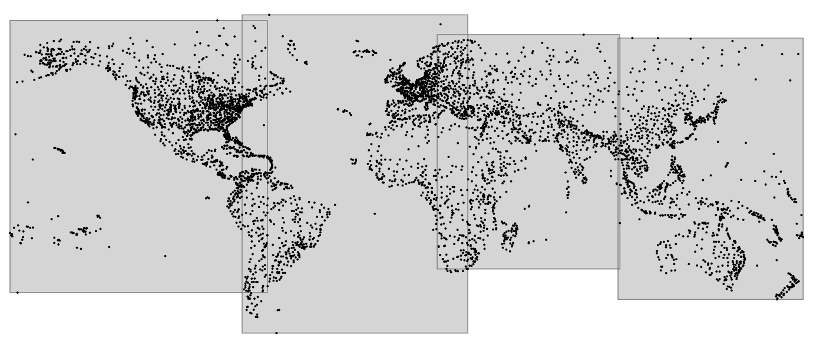在下一层，大矩形被分割成更小的矩形：
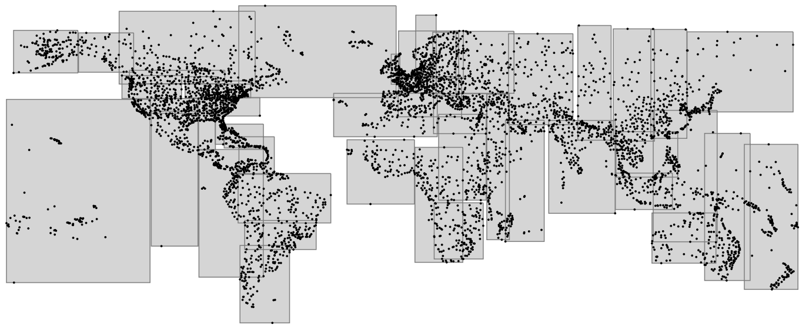最终，在树的内层，每个边界框包含的点数与单个页面可以容纳的点数相同。
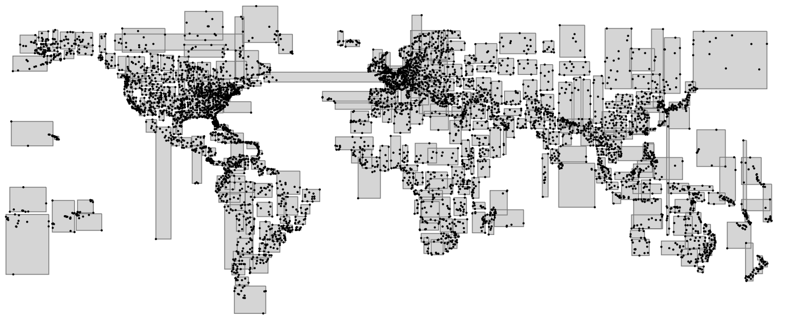此索引使用了 point_ops 操作符类，这是点唯一可用的操作符类。
矩形和任何其他几何图形也可以以相同的方式进行索引，但索引必须存储对象的边界框，而不是对象本身。
26.2.1 页面布局
你可以使用 pageinspect 扩展来研究 GiST 页面。
与 B 树索引不同，GiST 没有元页面，零页始终是树的根。如果根页面被分裂，旧的根会被移动到一个单独的页面，新的根则会取代它的位置。
这是根页面的内容：
=> SELECT ctid, keys
FROM gist_page_items(
get_raw_page('airports_gist_idx', 0), 'airports_gist_idx'
);
ctid | keys
−−−−−−−−−−−−−+−−−−−−−−−−−−−−−−−−−−−−−−−−−−−−−−−−−−−−−−−−−−−−−−−−−−−−−−−
(207,65535) | (coordinates)=((50.84510040283203,78.246101379395))
(400,65535) | (coordinates)=((179.951004028,73.51780700683594))
(206,65535) | (coordinates)=((−1.5908199548721313,40.63980103))
(466,65535) | (coordinates)=((−1.0334999561309814,82.51779937740001))
(4 rows)这四行对应于第一张图片中显示的上层的四个矩形。不幸的是，此处键显示为点 (这对叶子页面而言是有意义的)，而不是矩形 (这对内部页而言将更合乎逻辑)。但我们总是可以获取原始数据并自行解释它。
要提取更详细的信息，你可以使用 gevel 扩展 6，此扩展不包含在标准 PostgreSQL 发行版中。
26.2.2 操作符类
以下查询返回支持函数的列表，这些函数实现了树的搜索和插入操作的逻辑：7
=> SELECT amprocnum, amproc::regproc
FROM pg_am am
JOIN pg_opclass opc ON opcmethod = am.oid
JOIN pg_amproc amop ON amprocfamily = opcfamily
WHERE amname = 'gist'
AND opcname = 'point_ops'
ORDER BY amprocnum;
amprocnum | amproc
−−−−−−−−−−−+−−−−−−−−−−−−−−−−−−−−−−−−
1 | gist_point_consistent
2 | gist_box_union
3 | gist_point_compress
5 | gist_box_penalty
6 | gist_box_picksplit
7 | gist_box_same
8 | gist_point_distance
9 | gist_point_fetch
11 | gist_point_sortsupport
(9 rows)我已经列出了上面的必需函数：
1 consistency 函数，用于在搜索时遍历树
2 union 函数，合并矩形
5 penalty 函数，用于在插入条目时选择下降到哪个子树
6 picksplit 函数，在页面分裂发生之后分配条目到新页面上
7 same 函数，检查两个键是否相等
point_ops 操作符类包括以下操作符：
=> SELECT amopopr::regoperator, amopstrategy AS st, oprcode::regproc,
left(obj_description(opr.oid, 'pg_operator'), 19) description
FROM pg_am am
JOIN pg_opclass opc ON opcmethod = am.oid
JOIN pg_amop amop ON amopfamily = opcfamily
JOIN pg_operator opr ON opr.oid = amopopr
WHERE amname = 'gist'
AND opcname = 'point_ops'
ORDER BY amopstrategy;
amopopr | st | oprcode | description
−−−−−−−−−−−−−−−−−−−+−−−−+−−−−−−−−−−−−−−−−−−−−−+−−−−−−−−−−−−−−−−−−−−−
<<(point,point) | 1 | point_left | is left of
>>(point,point) | 5 | point_right | is right of
~=(point,point) | 6 | point_eq | same as
<<|(point,point) | 10 | point_below | is below
|>>(point,point) | 11 | point_above | is above
<−>(point,point) | 15 | point_distance | distance between
<@(point,box) | 28 | on_pb | point inside box
<^(point,point) | 29 | point_below | deprecated, use <<|
>^(point,point) | 30 | point_above | deprecated, use |>>
<@(point,polygon) | 48 | pt_contained_poly | is contained by
<@(point,circle) | 68 | pt_contained_circle | is contained by
(11 rows)操作符名称通常并不能告诉我们太多关于操作符语义的信息，因此这个查询还显示了底层函数的名称及其描述。无论如何，所有的操作符都涉及几何形状的相对位置 (左边、右边、上方、下方、包含、被包含) 以及它们之间的距离。
与 B 树相比，GiST 提供了更多的策略。一些策略编号对几种类型的索引是通用的，8 而其他一些则通过公式计算 (例如，28、48 和 68 实际上代表相同的策略：矩形、多边形和圆形的"被包含")。此外，GiST 支持一些过时的操作符名称 («| 和 |»)。
操作符类可能只实现了一些可用策略。例如，点的操作符类不支持包含策略，但在为具有可测量面积的几何图形定义的类中 (box_ops、poly_ops 和 circle_ops) 是可用的。
26.2.3 搜索包含的元素
一个可以通过索引加速的典型查询会返回指定区域内的所有点。
例如，让我们找到所有位于莫斯科中心一度范围以内的机场：
=> SELECT airport_code, airport_name->>'en'
FROM airports_big
WHERE coordinates <@ '<(37.622513,55.753220),1.0>'::circle;
airport_code | ?column?
−−−−−−−−−−−−−−+−−−−−−−−−−−−−−−−−−−−−−−−−−−−−−−−−−−−
SVO | Sheremetyevo International Airport
VKO | Vnukovo International Airport
DME | Domodedovo International Airport
BKA | Bykovo Airport
ZIA | Zhukovsky International Airport
CKL | Chkalovskiy Air Base
OSF | Ostafyevo International Airport
(7 rows)
=> EXPLAIN (costs off) SELECT airport_code
FROM airports_big
WHERE coordinates <@ '<(37.622513,55.753220),1.0>'::circle;
QUERY PLAN
−−−−−−−−−−−−−−−−−−−−−−−−−−−−−−−−−−−−−−−−−−−−−−−−−−−−−−−−−−−−−−−−−−−−−
Bitmap Heap Scan on airports_big
Recheck Cond: (coordinates <@ '<(37.622513,55.75322),1>'::circle)
−> Bitmap Index Scan on airports_gist_idx
Index Cond: (coordinates <@ '<(37.622513,55.75322),1>'::ci...
(4 rows)我们可以通过下图中的一个简单示例来更详细地了解这个操作符：
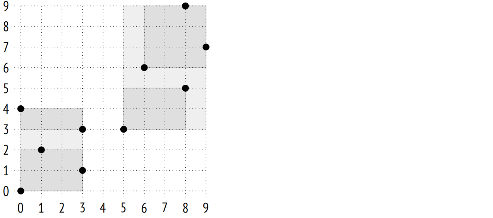如果以这种方式选择边界框，索引结构将如下所示：

包含操作符 <@ 用于判断特定的点是否位于指定矩形内。如果索引条目的矩形与该矩形有任何公共点，那么这个操作符的 consistency 函数 9 返回 “yes”。这意味着对于存储着缩小为点的矩形的叶节点条目，此函数用于判断该点是否包含在指定的矩形内。
例如，让我们找到下图中阴影矩形 (1,2)–(4,7) 的内部点：
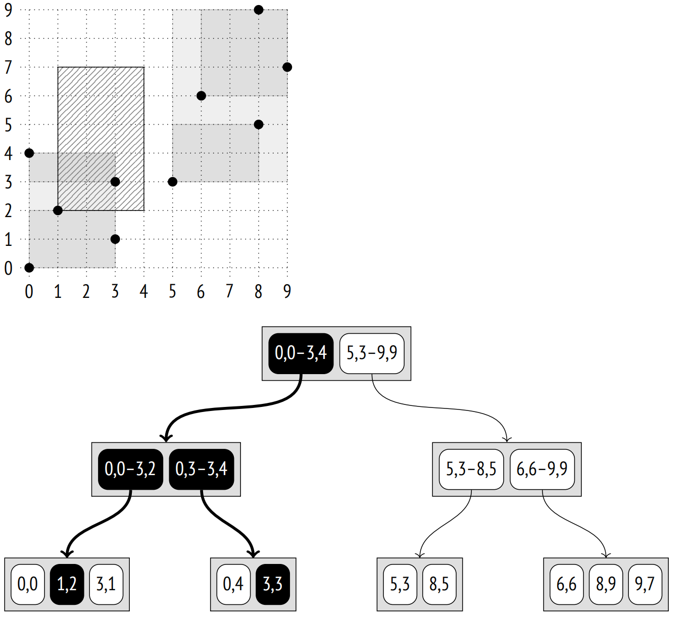搜索从根节点开始。边界框与 (0,0)-(3,4) 重叠，但不与 (5,3)-(9,9) 重叠。这意味着我们不需要下降到第二个子树。
在下一个层，边界框与 (0,3)-(3,4) 重叠，并且触及 (0,0)-(3,2)，所以我们必须检查两个子树。
一旦我们到达叶节点，我们只需要检查它们包含的所有点，并返回那些满足 consistency 函数的点。
B 树搜索总是选择确切的一个子节点。然而，GiST 搜索可能需要扫描多个子树，尤其是当它们的边界框有重叠时。
26.2.4 最近邻搜索
大多数由索引支持的操作符 (如在前面示例中所示的 = 或 <@) 通常被称为搜索操作符，因为它们定义了查询中的搜索条件。这些操作符是谓词，即它们返回一个逻辑值。
但也有一组排序操作符，它们返回参数之间的距离。这些操作符用在 ORDER BY 子句中，并且通常由具有 Distance Orderable 属性的索引支持，这使你能够快速找到指定数量的最近邻。这种类型的搜索被称为 k-NN，或 k-最近邻搜索。
例如，我们可以找到最靠近科斯特罗马的 10 个机场：
=> SELECT airport_code, airport_name->>'en'
FROM airports_big
ORDER BY coordinates <-> '(40.926780,57.767943)'::point
LIMIT 10;
airport_code | ?column?
−−−−−−−−−−−−−−+−−−−−−−−−−−−−−−−−−−−−−−−−−−−−−−−−−−−−−−−−−−−−−−−
KMW | Kostroma Sokerkino Airport
IAR | Tunoshna Airport
IWA | Ivanovo South Airport
VGD | Vologda Airport
RYB | Staroselye Airport
GOJ | Nizhny Novgorod Strigino International Airport
CEE | Cherepovets Airport
CKL | Chkalovskiy Air Base
ZIA | Zhukovsky International Airport
BKA | Bykovo Airport
(10 rows)
=> EXPLAIN (costs off) SELECT airport_code
FROM airports_big
ORDER BY coordinates <-> '(40.926780,57.767943)'::point
LIMIT 5;
QUERY PLAN
−−−−−−−−−−−−−−−−−−−−−−−−−−−−−−−−−−−−−−−−−−−−−−−−−−−−−−−−−−−−−−−−−
Limit
−> Index Scan using airports_gist_idx on airports_big
Order By: (coordinates <−> '(40.92678,57.767943)'::point)
(3 rows)由于索引扫描可以逐个返回结果，并且可以随时停止，因此可以非常快速地找到前几个值。
如果没有索引支持，要实现高效的搜索会非常困难。我们需要找到特定区域内的所有点，然后逐渐扩大此区域，直到返回所请求的结果数量为止。这将需要多次索引扫描，更不用说选择初始区域大小及其增量的问题了。
你可以在系统目录中看到操作符类型 (“s” 代表搜索，“o” 代表排序操作符)：
=> SELECT amopopr::regoperator, amoppurpose, amopstrategy
FROM pg_am am
JOIN pg_opclass opc ON opcmethod = am.oid
JOIN pg_amop amop ON amopfamily = opcfamily
WHERE amname = 'gist'
AND opcname = 'point_ops'
ORDER BY amopstrategy;
amopopr | amoppurpose | amopstrategy
−−−−−−−−−−−−−−−−−−−+−−−−−−−−−−−−−+−−−−−−−−−−−−−−
<<(point,point) | s | 1
>>(point,point) | s | 5
~=(point,point) | s | 6
<<|(point,point) | s | 10
|>>(point,point) | s | 11
<−>(point,point) | o | 15
<@(point,box) | s | 28
<^(point,point) | s | 29
>^(point,point) | s | 30
<@(point,polygon) | s | 48
<@(point,circle) | s | 68
(11 rows)为了支持这样的查询，操作符类必须定义一个额外的支持函数：距离函数，该函数在索引条目上调用，用于计算此条目中存储的值与其他某个值之间的距离。
对于表示索引值的叶元素，此函数必须返回到该值的距离。在点的情况下，10 它是常规的欧几里得距离，等于 $\sqrt{(x_2 - x_1)^2 + (y_2 - y_1)^2}$。
对于内部元素，该函数必须返回从其子叶元素到目标点的所有可能距离中的最小值。由于扫描所有子条目的成本很高，因此该函数可以乐观地低估距离 (牺牲一些效率)，但绝不能返回更大的值 — 这会破坏搜索的准确性。
因此，对于由边界框表示的内部元素，与点的距离按照常规数学意义理解：如果点在矩形内，则距离为零；否则是点与矩形之间的最小距离。11 这个值可以在不遍历矩形的所有子点的情况下轻松计算出来，并且保证不大于到这些点中任何一个的距离。
让我们考虑搜索点 (6,8) 的三个最近邻的算法：
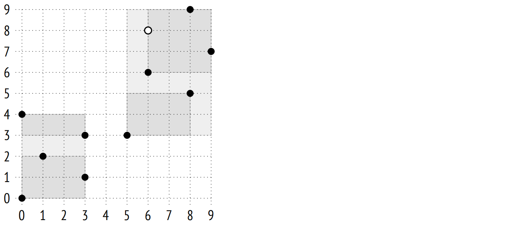搜索从根节点开始，它包含两个边界框。指定点到矩形 (0,0)–(3,4) 的距离被视为到矩形角 (3,4) 的距离，等于 5.0。到 (5,3)–(9,9) 的距离是 0.0。(我打算将这里的所有值四舍五入到小数点后一位；对于这个例子，这样的精度就足够了)。
子节点按照距离增加的顺序进行遍历。因此，我们首先下降到右边的子节点，其中包含两个矩形：(5,3)–(8,5) 和 (6,6)–(9,9)。到第一个矩形的距离是 3.0；到第二个矩形的距离是 0.0。
再一次，我们选择右侧的子树，并进入包含三个点的叶节点：(6,6) 的距离为 2.0, (8,9) 的距离为 2.2, (9,7) 的距离为 3.2。
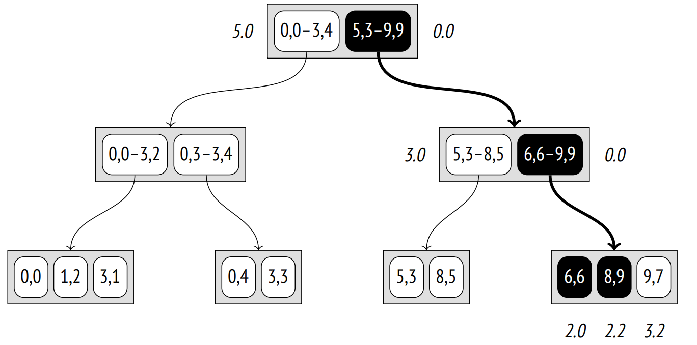因此，我们已经找到了前两个点：(6,6) 和 (8,9)。但该节点的第三个点与矩形 (5,3)-(8,5) 的距离比到 (9,7) 的距离要大。
所以现在我们必须下降到左边的子节点，其中包含两个点。到点 (8,5) 的距离是 3.6，而到 (5,3) 的距离是 5.1。结果表明，前一个子节点中的点 (9,7) 比左子树的任何节点都更接近点 (6,8)，所以我们可以将其作为第三个结果返回。
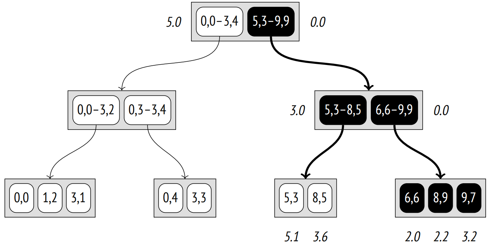这个例子说明了内部条目的距离函数必须满足的要求。由于到矩形 (5,3)-(8,5) 的距离减小了 (3.0 而不是 3.6)，所以必须扫描一个额外的节点，因此搜索效率有所下降；然而，算法本身仍然是正确的。
26.2.5 插入
当一个新键被插入到 R 树中时，用于该键的节点由 penalty 函数确定：边界框的大小必须尽可能少地增加。12
例如，点 (4,7) 将被添加到矩形 (5,3)-(9,9) 中，因为它的面积将仅增加 6 个单位，而矩形 (0,0)-(3,4) 需要增加 12 个单位。在下一层 (叶子)，点将被添加到矩形 (6,6)-(9,9) 中，遵循同样的逻辑。
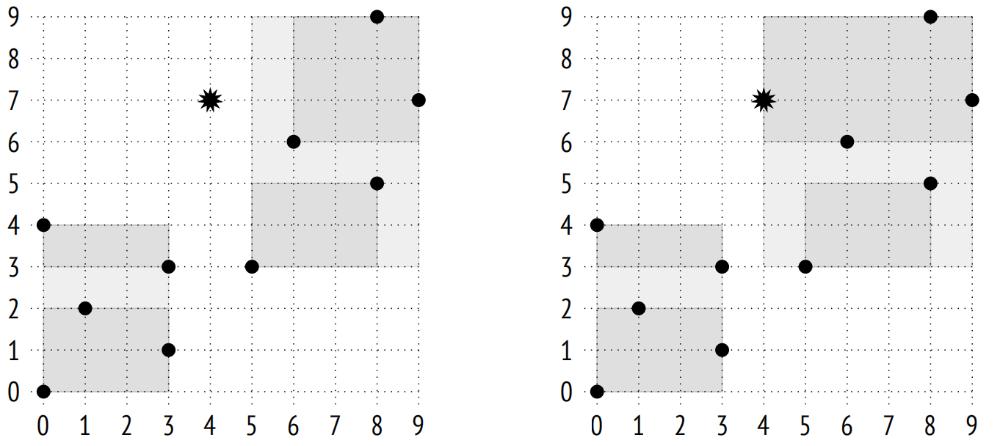假设一个页面最多只能包含三个元素，那么就需要将其拆分为两个，并且元素必须在新页面之间分配。在这个例子中，结果看起来是显而易见的，但在一般情况下，数据分配任务并不那么简单。首先，picksplit 函数尝试最小化边界框之间的重叠，旨在获得更小的矩形和并在页面间实现点的均匀分布。13
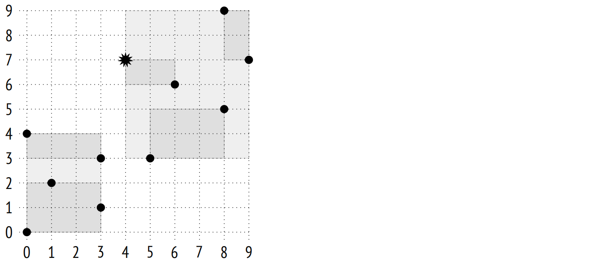26.2.6 排它约束
GiST 索引也可以用于排它约束。
排它约束保证了任何两个堆元组的指定字段不会在某个操作符意义上相匹配。以下条件必须满足：
- 索引方法必须支持排它约束 (CAN EXCLUDE 属性) 。
- 操作符必须属于这种索引方法的操作符类。
- 操作符必须是可交换的，即条件 “a operator b = b operator a” 必须为真。
对于上面考虑的哈希和 B 树访问方法，唯一合适的操作符是等于。它实际上将一个排它约束变成了一个唯一约束，这并不是很有用。
GiST 方法还有两种更适用的策略：
- 重叠：&& 运算符
- 相邻：-|-运算符 (为区间定义)
尝试一下，让我们创建一个约束，禁止机场彼此靠得太近。这个条件可以表述如下：以机场坐标为中心的特定半径的圆不能重叠：
=> ALTER TABLE airports_data ADD EXCLUDE
USING gist (circle(coordinates,0.2) WITH &&);
=> INSERT INTO airports_data(
airport_code, airport_name, city, coordinates, timezone
) VALUES (
'ZIA', '{}', '{"en": "Moscow"}', point(38.1517, 55.5533),
'Europe/Moscow'
);
ERROR: conflicting key value violates exclusion constraint
"airports_data_circle_excl"
DETAIL: Key (circle(coordinates, 0.2::double
precision))=(<(38.1517,55.5533),0.2>) conflicts with existing key
(circle(coordinates, 0.2::double
precision))=(<(37.90629959106445,55.40879821777344),0.2>).当定义了排它约束，会自动添加一个索引来强制执行它。此处是一个基于表达式创建的 GiST 索引。
让我们来看一个更复杂的例子。假设我们允许机场距离接近，但前提是它们属于同一个城市。一个可能的解决方案是定义一个新的完整性约束，可以如下表述：如果圆的中心位于机场坐标，并且对应的城市名称不同 (!=)，则禁止存在具有相交 (&&) 的圆的一组行。
尝试创建这样的约束会导致报错，因为 text 数据类型没有操作符类：
=> ALTER TABLE airports_data
DROP CONSTRAINT airports_data_circle_excl; -- delete old data
=> ALTER TABLE airports_data ADD EXCLUDE USING gist (
circle(coordinates,0.2) WITH &&,
(city->>'en') WITH !=
);
ERROR: data type text has no default operator class for access
method "gist"
HINT: You must specify an operator class for the index or define a
default operator class for the data type.然而，GiST 确实提供了像 “strictly left of"、"strictly right of” 和 “same” 的策略，这些策略也可以应用于常规的允许比较和排序的数据类型，例如数字或文本字符串。btree_gist 扩展专门用于实现 GiST 对通常与 B 树一起使用的操作的支持：
=> CREATE EXTENSION btree_gist;
=> ALTER TABLE airports_data ADD EXCLUDE USING gist (
circle(coordinates,0.2) WITH &&,
(city->>'en') WITH !=
);
ALTER TABLE约束现已创建。现在我们不能添加属于同名城镇的茹科夫斯基机场，因为莫斯科的机场太近了：
=> INSERT INTO airports_data(
airport_code, airport_name, city, coordinates, timezone
) VALUES (
'ZIA', '{}', '{"en": "Zhukovsky"}', point(38.1517, 55.5533),
'Europe/Moscow'
);
ERROR: conflicting key value violates exclusion constraint
"airports_data_circle_expr_excl"
DETAIL: Key (circle(coordinates, 0.2::double precision), (city −>>
'en'::text))=(<(38.1517,55.5533),0.2>, Zhukovsky) conflicts with
existing key (circle(coordinates, 0.2::double precision), (city −>>
'en'::text))=(<(37.90629959106445,55.40879821777344),0.2>, Moscow).但如果我们指定这个机场的城市为莫斯科，我们就可以做到：
=> INSERT INTO airports_data(
airport_code, airport_name, city, coordinates, timezone
) VALUES (
'ZIA', '{}', '{"en": "Moscow"}', point(38.1517, 55.5533),
'Europe/Moscow'
);
INSERT 0 1重要的是要记住，即使 GiST 支持大于、小于和等于操作，但在这方面 B 树要高效得多，尤其是在访问一系列值时。因此，只有在 GiST 索引确实因其他合理原因而需要时，上面所展示的 btree_gist 扩展技巧才有意义。
26.2.7 属性
访问方法属性。以下是 GiST 方法的属性：
=> SELECT a.amname, p.name, pg_indexam_has_property(a.oid, p.name)
FROM pg_am a, unnest(array[
'can_order', 'can_unique', 'can_multi_col',
'can_exclude', 'can_include'
]) p(name)
WHERE a.amname = 'gist';
amname | name | pg_indexam_has_property
−−−−−−−−+−−−−−−−−−−−−−−−+−−−−−−−−−−−−−−−−−−−−−−−−−
gist | can_order | f
gist | can_unique | f
gist | can_multi_col | t
gist | can_exclude | t
gist | can_include | t
(5 rows)唯一约束和排序是不被支持的。
创建 GiST 索引时可以包含额外的 INCLUDE 列。
正如我们所知，我们可以在多个列上创建索引，也可以在完整性约束中使用。
索引级属性。这些属性在索引级别定义：
=> SELECT p.name, pg_index_has_property('airports_gist_idx', p.name)
FROM unnest(array[
'clusterable', 'index_scan', 'bitmap_scan', 'backward_scan'
]) p(name);
name | pg_index_has_property
−−−−−−−−−−−−−−−+−−−−−−−−−−−−−−−−−−−−−−−
clusterable | t
index_scan | t
bitmap_scan | t
backward_scan | f
(4 rows)GiST 索引可用于聚簇。
至于数据检索方法，既支持常规 (逐行) 索引扫描，也支持位图扫描。但是，不允许对 GiST 索引进行反向扫描。
列级属性。大多数列级属性都是在访问方法级别定义的，并且保持不变：
=> SELECT p.name,
pg_index_column_has_property('airports_gist_idx', 1, p.name)
FROM unnest(array[
'orderable', 'search_array', 'search_nulls'
]) p(name);
name | pg_index_column_has_property
−−−−−−−−−−−−−−+−−−−−−−−−−−−−−−−−−−−−−−−−−−−−−
orderable | f
search_array | f
search_nulls | t
(3 rows)所有与排序相关的属性都被禁用。
空值是允许的，但 GiST 在处理它们时并不是很高效。空值不会增大边界框；这样的值会被插入到随机的子树中，所以在整个树中都需要搜索它们。
然而，一些列级属性确实依赖于特定的操作符类：
=> SELECT p.name,
pg_index_column_has_property('airports_gist_idx', 1, p.name)
FROM unnest(array[
'returnable', 'distance_orderable'
]) p(name);
name | pg_index_column_has_property
−−−−−−−−−−−−−−−−−−−−+−−−−−−−−−−−−−−−−−−−−−−−−−−−−−−
returnable | t
distance_orderable | t
(2 rows)仅索引扫描是允许的，因为叶节点保留了完整的索引键。
正如我们上面看到的，这个操作符类提供了用于最近邻搜索的距离操作符。到空值的距离被认为是空；这些值最后返回 (类似于 B 树中的 NULLS LAST 子句)。
然而，没有针对范围类型 (代表线段，即线性几何而不是面积几何) 的距离操作符，因此为此类类型创建的索引属性有所不同：
=> CREATE TABLE reservations(during tsrange);
=> CREATE INDEX ON reservations USING gist(during);
=> SELECT p.name,
pg_index_column_has_property('reservations_during_idx', 1, p.name)
FROM unnest(array[
'returnable', 'distance_orderable'
]) p(name);
name | pg_index_column_has_property
−−−−−−−−−−−−−−−−−−−−+−−−−−−−−−−−−−−−−−−−−−−−−−−−−−−
returnable | t
distance_orderable | f
(2 rows)26.3 用于全文检索的 RD 树
26.3.1 关于全文检索
全文检索的目的 14 是从提供的数据集中选择那些与搜索查询相匹配的文档。
为了进行搜索，文档被转换为 tsvector 类型，其中包含词素以及它们在文档中的位置。词素是被转换成适合搜索格式的单词。默认情况下，所有单词都会被标准化为小写，并且它们的词尾被切除：
=> SET default_text_search_config = english;
=> SELECT to_tsvector(
'No one can tell me, nobody knows, ' ||
'Where the wind comes from, where the wind goes.'
);
to_tsvector
−−−−−−−−−−−−−−−−−−−−−−−−−−−−−−−−−−−−−−−−−−−−−−−−−−−−−−−−−−−−−−−−−−−−−−
'come':11 'goe':16 'know':7 'nobodi':6 'one':2 'tell':4 'wind':10,15
(1 row)所谓的停止词 (如 “the” 或 “from”) 被过滤掉：它们被认为出现得太频繁，以至于搜索不会返回任何有意义的结果。当然，所有这些转换都是可配置的。
搜索查询由另一种类型表示：tsquery。任何查询都包含一个或多个由逻辑连接词组合的词素：& (与)，| (或)，! (非)。你还可以使用括号来定义操作符的优先级。
=> SELECT to_tsquery('wind & (comes | goes)');
to_tsquery
−−−−−−−−−−−−−−−−−−−−−−−−−−−−−
'wind' & ( 'come' | 'goe' )
(1 row)用于全文检索的唯一操作符是匹配操作符 @@：
=> SELECT amopopr::regoperator, oprcode::regproc, amopstrategy
FROM pg_am am
JOIN pg_opclass opc ON opcmethod = am.oid
JOIN pg_amop amop ON amopfamily = opcfamily
JOIN pg_operator opr ON opr.oid = amopopr
WHERE amname = 'gist'
AND opcname = 'tsvector_ops'
ORDER BY amopstrategy;
amopopr | oprcode | amopstrategy
−−−−−−−−−−−−−−−−−−−−−−+−−−−−−−−−−−−−+−−−−−−−−−−−−−−
@@(tsvector,tsquery) | ts_match_vq | 1
(1 row)这个操作符决定了文档是否满足查询条件。这里有一个例子：
=> SELECT to_tsvector('Where the wind comes from, where the wind goes')
@@ to_tsquery('wind & coming');
?column?
−−−−−−−−−−
t
(1 row)这绝不是全文检索的详尽描述，但这些信息应该足以理解索引基础。
26.3.2 索引 tsvector 数据
为了高效工作，全文检索必须由索引支持。15 由于索引的不是文档本身，而是 tsvector 值，因此你有两个选择：要么在表达式上创建一个索引并执行类型转换，要么添加一个 tsvector 类型的单独列并索引这个列。第一种方法的好处是它不会浪费存储 tsvector 值的空间，因为这些值实际上并不需要。但它比第二种选择要慢，因为索引引擎必须重新检查由访问方法返回的所有堆元组。这意味着对于每个重新检查的行，tsvector 值必须重新计算，正如我们很快会看到的，GiST 会重新检查所有行。
让我们构造一个简单的例子。我们将创建一个两列的表：第一列存储文档，而第二列保存 tsvector 值。我们可以使用触发器来更新第二列，16 但声明该列为生成列会更为方便：17
=> CREATE TABLE ts(
doc text,
doc_tsv tsvector GENERATED ALWAYS AS (
to_tsvector('pg_catalog.english', doc)
) STORED
);
=> CREATE INDEX ts_gist_idx ON ts
USING gist(doc_tsv);在上面的例子中，我使用了带有单个参数的 to_tsvector 函数，并设置了 default_text_search_config 参数来定义全文检索配置。由于此函数的这一版本隐式依赖于参数值，其稳定性类别是 STABLE。但在这里，我使用了另一个明确定义配置的版本；此版本是 IMMUTABLE 的，可以用在生成表达式中。
让我们插入几行：
=> INSERT INTO ts(doc)
VALUES
('Old MacDonald had a farm'),
('And on his farm he had some cows'),
('Here a moo, there a moo'),
('Everywhere a moo moo'),
('Old MacDonald had a farm'),
('And on his farm he had some chicks'),
('Here a cluck, there a cluck'),
('Everywhere a cluck cluck'),
('Old MacDonald had a farm'),
('And on his farm he had some pigs'),
('Here an oink, there an oink'),
('Everywhere an oink oink')
RETURNING doc_tsv;
doc_tsv
−−−−−−−−−−−−−−−−−−−−−−−−−−−−−−−−
'farm':5 'macdonald':2 'old':1
'cow':8 'farm':4
'moo':3,6
'everywher':1 'moo':3,4
'farm':5 'macdonald':2 'old':1
'chick':8 'farm':4
'cluck':3,6
'cluck':3,4 'everywher':1
'farm':5 'macdonald':2 'old':1
'farm':4 'pig':8
'oink':3,6
'everywher':1 'oink':3,4
(12 rows)
INSERT 0 12因此，R 树不适合用于索引文档，因为对它们来说，边界框的概念没有意义。因此，使用了它的 RD 树 (俄罗斯套娃) 修改版本。这样的树不使用边界框，而是使用边界集，即包含其子集所有元素的集合。对于全文检索，这样的集合包含文档的词素，但在一般情况下，边界集可以是任意的。
在索引条目中，有几种方法可以表示边界集。最简单的方法是枚举集合的所有元素。
以下是它可能的样子：
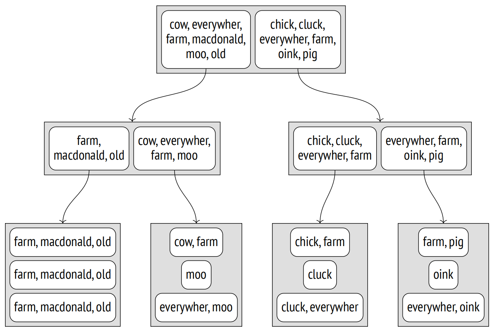为了找到满足 DOC_TSV @@ TO_TSQUERY(‘row’) 条件的文档，我们需要下降到子条目已知包含 “cow” 词素的节点。
这种表示方法的问题是显而易见的。一个文档中的词素数量可能是巨大的，而页面大小是有限的。即使每个特定的文档单独来看时并没有太多不同的词素，它们在树的上层合并后的集合仍然可能过大。
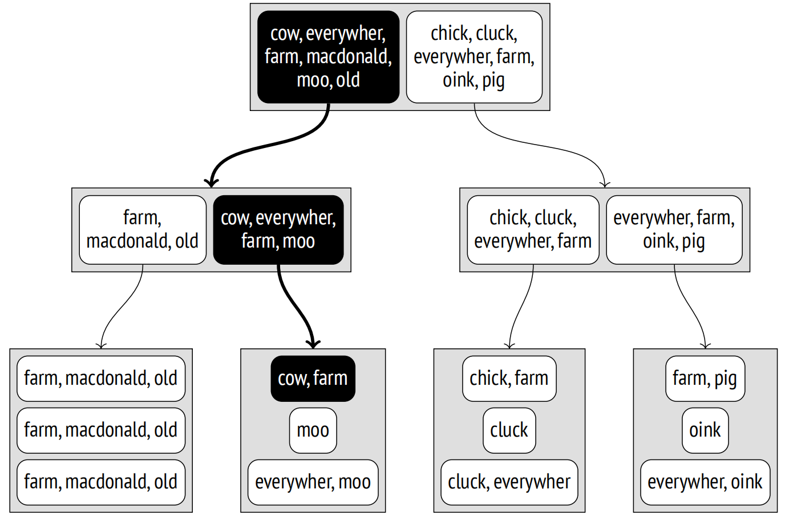全文检索使用另一种解决方案，即更紧凑的签名树。对于那些处理布隆过滤器的人来说应该非常熟悉。
每个词素都可以用其签名表示：一个特定长度的位串，其中只有一个位被设置为 1。应该设置哪一位由词素的哈希函数决定。
一个文档的签名是这个文档中所有词素的签名进行按位或运算的结果。
假设我们已经为我们的词素分配了以下签名：
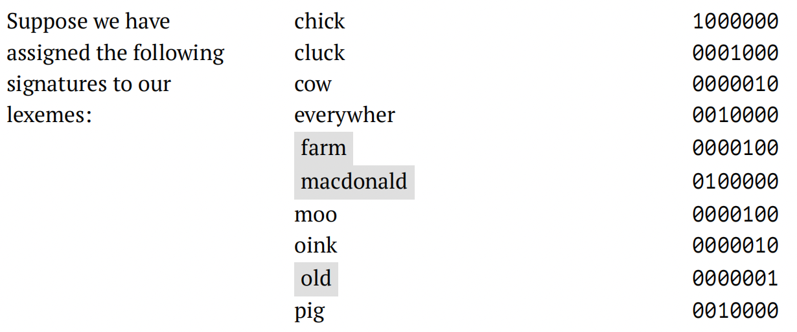那么此文档的签名如下所示：
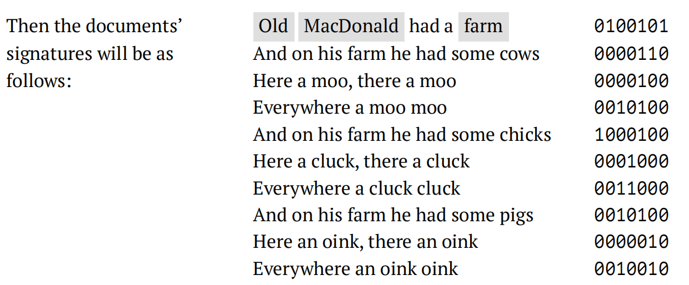索引树可以这样表示：
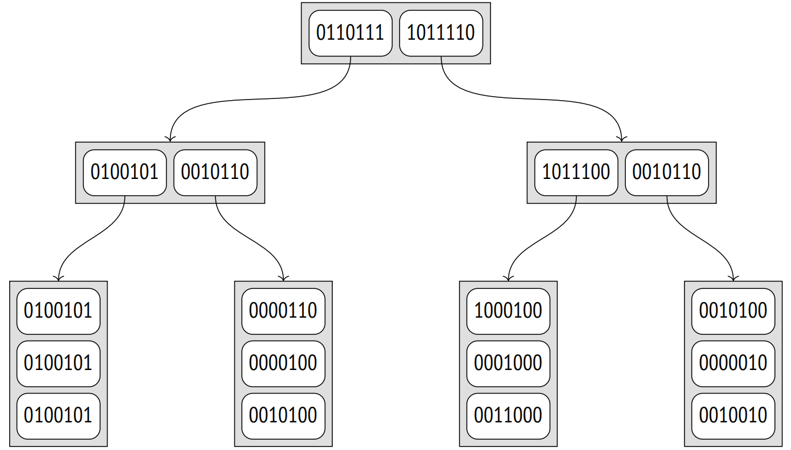这种方法的优点是显而易见的：索引条目具有相同的大小，而且非常小，因此索引显得非常紧凑。但是，这种方法也有一定的缺点。首先，由于索引不再存储索引键，因此无法执行仅索引扫描，每个返回的 TID 都必须通过表重新检查。准确性也受到影响：索引可能返回许多误报 (false positives)，必须在重新检查期间将其过滤掉。
让我们再看一下 DOC_TSV @@ TO_TSQUERY(‘COWS’) 条件。查询的签名和文档的签名计算方式相同；在这个特定案例中，它等于 0000010。consistency 函数 18 必须找到所有在其签名中设置了相同位的子节点：
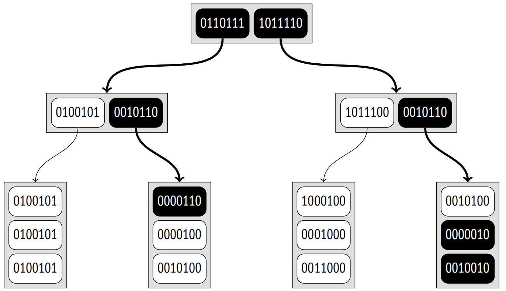与前面的示例相比，这里因为误报的原因需要扫描更多的节点。由于签名的容量有限，大数据集中的一些词素必然具有相同的签名。在这个例子中，此类词素是 “cow” 和 “oink”。这意味着同一个签名可以匹配不同的文档；这里查询的签名对应其中三个。
误报降低了索引的效率，但不以任何方式影响其正确性：由于保证排除了漏报 (false negative)，所以不可能错过所需的值。
显然，签名的实际大小更大。默认情况下，它占用 124 字节 (992 比特)，因此冲突的可能性比这个例子中的要低得多。如果需要，你可以使用操作符类参数将签名大小进一步增加到大约 2000 字节：
CREATE INDEX ... USING gist(column tsvector_ops(siglen = size));此外，如果值足够小 (略小于页面的 1/16，对于标准页面大约是 500 字节)，19 那么在索引的叶子页面上，tsvector_ops 操作符类保留的是 tsvector 值本身，而不是它们的签名。
要了解索引在实际数据上是如何工作的，我们可以使用 pgsql-hackers 邮件列表归档。20 它包含了 356125 封电子邮件及其发送日期、主题、作者姓名和正文。
让我们添加一个 tsvector 类型的列并建立索引。在这里，我将三个值 (主题、作者和正文) 合并成一个单一向量，以展示文档可以动态生成，而不必存储在单一列中。
=> ALTER TABLE mail_messages ADD COLUMN tsv tsvector
GENERATED ALWAYS AS ( to_tsvector(
'pg_catalog.english', subject||' '||author||' '||body_plain
) ) STORED;
NOTICE: word is too long to be indexed
DETAIL: Words longer than 2047 characters are ignored.
...
NOTICE: word is too long to be indexed
DETAIL: Words longer than 2047 characters are ignored.
ALTER TABLE
=> CREATE INDEX mail_gist_idx ON mail_messages USING gist(tsv);
=> SELECT pg_size_pretty(pg_relation_size('mail_gist_idx'));
pg_size_pretty
−−−−−−−−−−−−−−−−
127 MB
(1 row)在填充列的过程中，由于大小的原因，一定数量的最大单词被过滤掉了。但是一旦索引准备好了，它就可以在搜索查询中使用。
=> EXPLAIN (analyze, costs off, timing off, summary off)
SELECT *
FROM mail_messages
WHERE tsv @@ to_tsquery('magic & value');
QUERY PLAN
−−−−−−−−−−−−−−−−−−−−−−−−−−−−−−−−−−−−−−−−−−−−−−−−−−−−−−−−−−
Index Scan using mail_gist_idx on mail_messages
(actual rows=898 loops=1)
Index Cond: (tsv @@ to_tsquery('magic & value'::text))
Rows Removed by Index Recheck: 7859
(4 rows)除了满足条件的 898 行外，访问方法还返回了 7859 行，这些行稍后将在重新检查期间被过滤掉。如果我们增加了签名的容量，这将提高准确性 (因此也提高了索引的效率)，但索引大小会增加：
=> DROP INDEX mail_messages_tsv_idx;
=> CREATE INDEX ON mail_messages
USING gist(tsv tsvector_ops(siglen=248));
=> SELECT pg_size_pretty(pg_relation_size('mail_messages_tsv_idx'));
pg_size_pretty
−−−−−−−−−−−−−−−−
139 MB
(1 row)
=> EXPLAIN (analyze, costs off, timing off, summary off)
SELECT *
FROM mail_messages
WHERE tsv @@ to_tsquery('magic & value');
QUERY PLAN
−−−−−−−−−−−−−−−−−−−−−−−−−−−−−−−−−−−−−−−−−−−−−−−−−−−−−−−−−−
Index Scan using mail_messages_tsv_idx on mail_messages
(actual rows=898 loops=1)
Index Cond: (tsv @@ to_tsquery('magic & value'::text))
Rows Removed by Index Recheck: 2060
(4 rows)26.3.3 属性
我已经展示了访问方法的属性，其中大多数对于所有操作符类都是相同的。但是，以下两个列级属性值得一提：
=> SELECT p.name,
pg_index_column_has_property('mail_messages_tsv_idx', 1, p.name)
FROM unnest(array[
'returnable', 'distance_orderable'
]) p(name);
name | pg_index_column_has_property
−−−−−−−−−−−−−−−−−−−−+−−−−−−−−−−−−−−−−−−−−−−−−−−−−−−
returnable | f
distance_orderable | f
(2 rows)现在无法进行仅索引扫描，因为无法从其签名恢复原始值。在这个特定情况下，这是完全可以接受的：tsvector 值仅用于搜索，而我们需要检索的是文档本身。
对于 tsvector_ops 类，排序操作符也没有定义。
26.4 其他数据类型
我只考虑了两个最重要的例子。它们展示了尽管 GiST 方法基于平衡树，但得益于不同操作符类中不同的支持函数实现，它可以用于多种数据类型。当我们谈论 GiST 索引时，我们必须始终指定操作符类，因为它对索引属性至关重要。
以下是 GiST 访问方法目前支持的更多数据类型：
几何数据类型。除了点，GiST 还可以索引其他几何对象：矩形、圆形、多边形。为此，所有这些对象都由它们的边界框表示。
cube 扩展添加了同名数据类型，代表多维立方体。它们使用具有相应维度的边界框的 R 树进行索引。
范围类型。 PostgreSQL 提供了几种内置的数字和时间范围类型，例如 int4range 和 tstzrange。21 你可以使用 CREATE TYPE AS RANGE 命令定义自定义范围类型。
所有范围类型，无论是标准的还是自定义的，都由 GiST 通过 range_ops 操作符类支持。22 对于索引，应用一维 R 树：在这种情况下，边界框被转换为边界段。
多范围类型也支持；它们依赖于 multirange_ops 类。边界范围包括作为多范围值的一部分的所有范围。
seg 扩展提供了用于区间的同名数据类型，其边界具有特定的精度。它虽然不被视为范围类型，但实际上是，因此可以以完全相同的方式进行索引。
Ordinal 类型。让我们再次回顾一下 btree_gist 扩展：它为 GiST 方法提供了操作符类以支持各种允许比较和排序的数据类型，这些数据类型通常由 B 树索引。当其中一列的数据类型不被 B 树支持时，这样的操作符类可用于构建多列索引。
网络地址类型。inet 数据类型内置了 GiST 支持，通过 inet_ops 操作符类 23 实现。
整数数组。intarray 扩展扩展了整数数组的功能，为它们添加了 GiST 支持。有两类操作符。对于小型数组，你可以使用 gist_int_ops，它实现了 RD 树，索引条目中的键具有完整表示。大型数组将从基于 gist_bigint_ops 操作符类的更紧凑但精度更低的签名 RD 树中受益。
操作符类名称中额外的下划线属于基本类型数组的名称。例如，除了更常见的 int4[] 表示法之外，整数数组还可以表示为 _int4。尽管如此，不存在 _int和 _bigint 类型。
Ltree。ltree 扩展添加了同名数据类型，用于带有标签的树状结构。通过使用签名 RD 树提供 GiST 支持，这些树使用用于 ltree 值的 gist_ltree_ops 操作符类和用于 ltree 类型数组的 gist__ltree_ops 操作符类。
键值存储。hstore 扩展提供了用于存储键值对的 hstore 数据类型。gist_hstore_ops 操作符类基于签名 RD 树实现了索引支持。
三元组。pg_trgm 扩展添加了 gist_trgm_ops 类，该类实现了用于比较文本字符串和通配符搜索的索引支持。
-
postgresql.org/docs/14/gist.html
backend/access/gist/README ↩︎ -
backend/access/gist/gistget.c, gistgettuple function ↩︎
-
backend/access/gist/gistutil.c, gistchoose function ↩︎
-
backend/access/gist/gistsplit.c, gistSplitByKey function ↩︎
-
You can download the corresponding file at edu.postgrespro.ru/internals-14/extra_airports.copy (I have used the data available at the openflights.org website). ↩︎
-
sigaev.ru/git/gitweb.cgi?p=gevel.git ↩︎
-
postgresql.org/docs/14/gist-extensibility.html ↩︎
-
include/access/stratnum.h ↩︎
-
backend/access/gist/gistproc.c, gist_point_consistent function ↩︎
-
backend/utils/adt/geo_ops.c, point_distance function ↩︎
-
backend/utils/adt/geo_ops.c, box_closest_point function ↩︎
-
backend/access/gist/gistproc.c, gist_box_penalty function ↩︎
-
backend/access/gist/gistproc.c, gist_box_picksplit function ↩︎
-
postgresql.org/docs/14/textsearch.html ↩︎
-
postgresql.org/docs/14/textsearch-indexes.html ↩︎
-
postgresql.org/docs/14/textsearch-features#TEXTSEARCH-UPDATE-TRIGGERS.html ↩︎
-
postgresql.org/docs/14/ddl-generated-columns.html ↩︎
-
backend/utils/adt/tsgistidx.c, gtsvector_consistent function ↩︎
-
backend/utils/adt/tsgistidx.c, gtsvector_compress function ↩︎
-
edu.postgrespro.ru/mail_messages.sql.gz ↩︎
-
postgresql.org/docs/14/rangetypes.html ↩︎
-
backend/utils/adt/rangetypes_gist.c ↩︎
-
backend/utils/adt/network_gist.c ↩︎